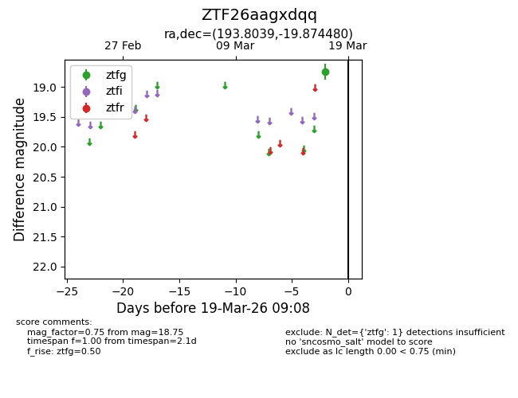
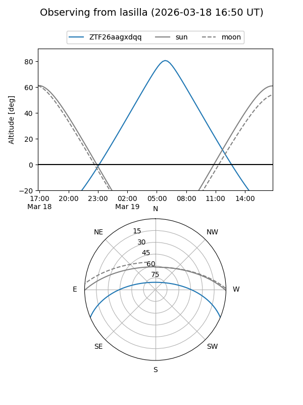
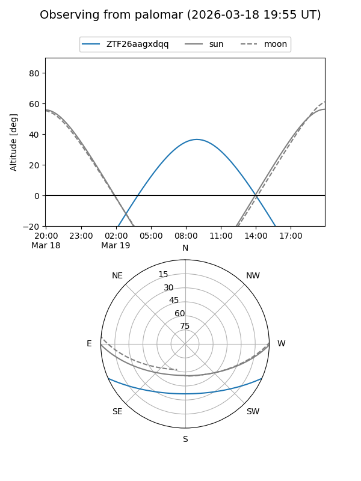

ZTF26aagxdqq
Target ZTF26aagxdqq at 2026-03-19 09:13
Aliases and brokers:
FINK: link
Lasair: link
ALeRCE: link
alt names
ZTF26aagxdqq (ztf,fink_ztf)
Coordinates:
equatorial (ra, dec) = 193.8039,-19.87448
equatorial (HMS+DMS) = 12:55:12.93,-19:52:28.13
galactic (l, b) = (304.1461,+42.98836)
Flags:
Photometry:
last ztfg=18.75
1 ztfg detections
Lightcurve

Visibility


Additional plots